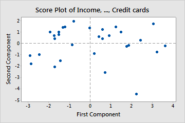
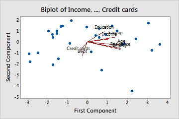
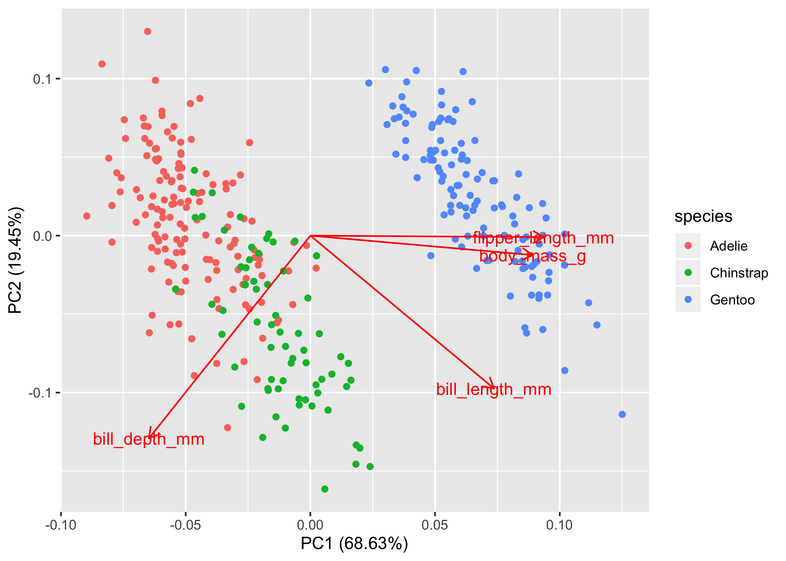
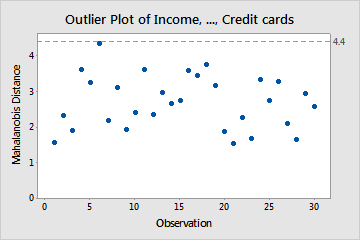
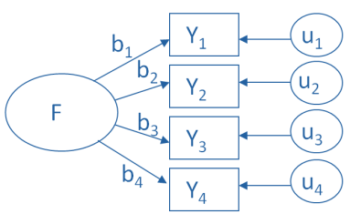
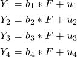
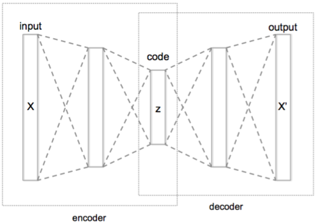
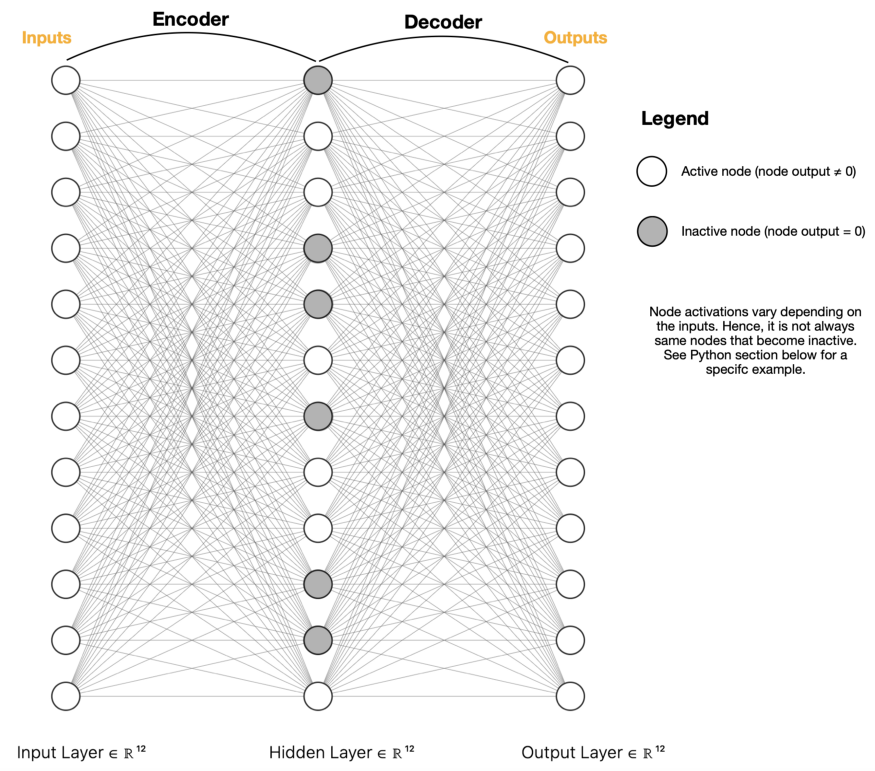

General
Misc
- Curse of Dimensionality
- Its when there are more variables than observations.
- Causes the least squares coefficient estimates to lose uniqueness.
- Causes overfitting in ML algorithms
- Packages
- {intRinsic} - Likelihood-Based Intrinsic Dimension Estimators; implements the ‘TWO-NN’ and ‘Gride’ estimators and the ‘Hidalgo’ Bayesian mixture model
- Provides a clustering function for the Hidalgo model
- Graphical outputs built using ggplot2 so they are customizable
- See section 5 (Summary and discussion) of the vignette for the recommended workflow and examples
- {Rdimtools} - feature selection, manifold learning, and intrinsic dimension estimation (IDE) methods
- Current version delivers 145 Dimension Reduction (DR) algorithms and 17 Intrinsic Dimension Estimator (IDE) methods.
- {RDRToolbox} - nonlinear dimension reduction with Isomap and LLE
- {intRinsic} - Likelihood-Based Intrinsic Dimension Estimators; implements the ‘TWO-NN’ and ‘Gride’ estimators and the ‘Hidalgo’ Bayesian mixture model
Terms
- Intrinsic Dimension (ID) - the minimal number of parameters needed to represent all the information contained in the data without significant information loss. A necessary piece of information to have before attempting to perform any dimensionality reduction, manifold learning, or visualization tasks. An indicator of the complexity of the features of a dataset.
- Isomap (IM) - nonlinear dimension reduction technique presented by Tenenbaum, Silva and Langford in 2000 [3, 4]. In contrast to LLE, it preserves global properties of the data. That means, that geodesic distances between all samples are captured best in the low dimensional embedding
- Locally Linear Embedding (LLE) - introduced in 2000 by Roweis, Saul and Lawrence. It preserves local properties of the data by representing each sample in the data by a linear combination of its k nearest neighbors with each neighbor weighted independently. LLE finally chooses the low dimensional representation that best preserves the weights in the target space.
- Projection Methods - maps the original data to a lower-dimensional space. The projection function can be linear, as in the case of PCA or or nonlinear, as in the case of locally linear embedding, Isomap, and tSNE.
- Geometric Methods - rely on the topology of a dataset, exploiting the properties of the distances between data points
PCA
Description
- Creates a subset of variables that maximises the covariance with the initial variable set, in order to store as much information as possible in a lower dimension.
- Compute an orthogonal basis of the space created by the original set of variables. The vectors creating this basis are the eigenvectors of the variance-covariance matrix. Reducing the dimension is then easily done by selecting the eigenvectors that are most representative of the initial data: those that contain most of the covariance. The amount of covariance stored by the vectors is quantified by the eigenvalues: the larger the eigenvalue, the more interesting its associated vectors.
- Projects variables orthogonally which removes correlation between predictor variables. The projection is in the direction of maximum variation such that the variation is distributed unequally among the transformed vectors. This allows the user to reduce the feature space while still being able to capture most of variance in the data.
- The principal components are equal to linear combinations of the correlated variables and these components are orthogonal to each other.
- Why? When multiple variables are highly correlated to each other it causes the math used calculate regression models to break down. High dimension datasets also require large amount computational resources. Too many columns compared to the number of rows.
Misc
- As a multicollinearity detector?
- “use principal component analysis, and examine the screeplot, or proportion of variation explained by a subset of principal components. If all (or almost all) of the variation is explained with a small subset of all the variables, it means you have a multicollinearity problem. You will need to drop some variables or do some other dimension reduction to fix it before choosing your final model.”
- I mean what if you have 20 variables and 3 are collinear, would this be detectable with PCA? I don’t think so. Seem more likely that it would take a large portion of your variables being collinear for it to be detectable in this fashion.
- For prediction models that used principal components as features, the eigenvectors that are computed on the training data need to be saved.
- The new data is preprocessed using the same standardization parameters (i.e. mean and std.dev) as the training data and mulitiplied times the eigenvectors to get the new principle component features for the prediciton model. (See Steps >> #6)
Preprocessing
- Notes from thread
- Center variables
- Other transformations should happen before this step
- center = T is default in
prcomp( ) - If variables are NOT on similar scales, then the data need to be scaled, also.
- Probably safer to always scale.
- Sqrt any count variables
- Log any variable with a heavy tail
- If you have too many features, use a sparse matrix to speed the process.
Diagnostics
- Test for localization (repo with R code/docs)
Bad: if you make a histogram of a component (or loading) vector and it has really big outliers (aka localization)
- Means this vector is mostly noise
Solution: Regularized spectral clustering (links to resources)
D_r = Diagonal(1/ sqrt(rs + mean(rs)) D_c = Diagonal(1/ sqrt(cs + mean(cs)) # Do SVD on D_r %*% A %*% D_c- A is your matrix
- rs is a vector containing the row sums of the matrix
- cs is a vector containing the column sums of the matrix
Steps
Center data in design matrix, A (n x p)
- If data are centered and scaled then the computation in step 2 will result in the correlation matrix instead of the covariance matrix.
Compute \(n \times n\) Covariance Matrix,
\[ C_x = \frac{1}{n-1}AA^T \]
Also seen \(A^T A\) but I don’t think it matters. The upper triangle and the lower triangle of this product are just reverse covariances of each other and thus equal and I suspect the order just switches flips the triangles. The eigenvectors/eigenvalues get reordered later on anyways.
The diagonal of this matrix is the variable variances.
Calculate eigenvectors and eigenvalues: \(C_x V = D_\lambda V\) shows the covariance matrix as a transformation matrix. \(D\) is a diagonal matrix (\(p\times p\)) with eigenvalues along the diagonal. \(V\) is a matrix (\(p \times p\)) of eigenvectors
\[ D_\lambda = VC_x V^{-1} \]
Order eigenvalues from largest to smallest
Order the eigenvectors according to the order of their corresponding eigenvalues
Equation for the ith value of the PC1 vector: \(\text{PC1}_i = V_{(,1)} \cdot A_{(i,)}\)
\(\text{PC2}\) is similar except \(V_{(,2)}\) is used
Where all the variables in \(A\) have been standardized and \(V\) contains the loadings (see below)
Notes
- \(AA^T\) is positive definite
- Which means it’s symmetric
- Which means it has real eigenvalues and orthogonal eigenvectors
- Which means the eigenvectors have covariances = 0
- Which means the eigenvectors aren’t correlated.
- The eigenvalues are eigenvector’s standard deviations which determines how much variance is explained by that PC.
- The variance of a variable is the dot-product of itself and it’s transpose, \(x_i \cdot x^t_i\)
- The covariance between two variables, \(x_i \cdot x^t_j\)
- In step 3 equation, eigenvalues give the magnitude (length of vector) and eigenvectors the direction after being transformed by the covariance matrix.
- Elements in a PC vector are called scores and elements in the V eigenvector are called loadings.
- The loadings are the coefficients in the linear combination of variables that equals the PC vector
- Loadings range from -1 to 1
- Variables with high loadings (usually defined as .4 in absolute value or higher because this suggests at least 16% of the measured variable variance overlaps with the variance of the component) are most representative of the component
- The sign of a loading (+ or -) indicates whether a variable and a principal component are positively or negatively correlated.
- Scaling your design matrix variables just means your using a correlation matrix instead of a covariance matrix.
- PCA is sensitive to outliers. Variance explained will be inflated in the direction of the outlier
- Guessing this means components strongly influenced by variables with outlier values will have their variance-explained value inflated
- Row order of data matters as to which interpretation (latent) of component is valid from Principle Components and Penguins
- Used data from palmerpenguins to create a “penguin size†variable from performing PCA on the data.
- In one row order, high values of pc1 were associated with high body mass, but after scrambling the rows, high values of pc1 were associated with low body mass.
- Have to be careful when adding new data to the PCA-created feature. It might arbitrarily change the sign of the component and change the meaning of the feature.
- PCA doesn’t take the response variable into account (unsupervised). Therefore, the directions (eigenvectors) obtained may be well-suited for the predictor variables, but not necessarily optimal for predicting the response. It does often produce pretty good results though.
- An alternative would be Partial Least Squares (PLS) which does take the response into account (supervised).
- In practice, PLS reduces bias while potentially increasing the variance so the benefit vs PCA regression is usually a wash.
- Capable of handling multivariate regression
- Popular in chemometrics for analyzing spectra.
- An alternative would be Partial Least Squares (PLS) which does take the response into account (supervised).
Plots
Misc
- Notes from: https://support.minitab.com/en-us/minitab/18/help-and-how-to/modeling-statistics/multivariate/how-to/principal-components/interpret-the-results/all-statistics-and-graphs/
- (See bkmk) use
broom::augmentto add original data to pca output. Coloring the points by categorical variables can help with interpreting the components - Also see pkgs in notebook for visualization options
Score
- Clusters
- If data follow a multivariate normal distribution then scores should be randomly distributed around zero
- If there are clusters, then there may be multiple distributions present
- Extreme points (e.g. point in bottom right) might be outliers and it might be worthwhile to investigate them further
- Clusters
Loadings

- Need to imagine an axis at (0,0). Don’t know why they don’t plot them with those axes.
- Finding the largest variable influences on a PC can used to interpret it’s meaning (think latent variable)
- Arrows
- A (near) horizontal arrow (along the x-axis) describes that the feature contributes strongly toward PC1.
- A (near) vertical arrow (along the y-axis) describes that a feature contributes strongly towards PC2.
- Values
- Loadings range from -1 to 1
- The termination coordinate of the line gives the loading values for that variable for both PCs
- Loadings (absolute magnitude) close to 0 indicate that the variable has little influence on that PC
- Larger the absolute value of the loading the greater the influence on that PC
- Negative values have negative influence on the latent variable that the PC represents (vice versa for positive values)
- Angle
- acute angles represent a positive correlation between those variables
- obtuse angles represent a negative correlation between those variables
- 90 degree angles represent independence between those variables
- Example
- Age, Residence, and Employ have large influences on PC1 (interpretation: financial stability)
- Credit cards, Debt, and Education have large influences on PC2 (interpretation: credit history)
- Says, “As the number credit cards increases, credit history (PC2 interpretation) becomes more negative.”
Bi-Plot
- Combination plot of the score and loading plot
- Can augment pca output (see top of section) with original data and color the scores by different categorical variables
- If a categorical variable level is clustered around Education, you could say as Education rises, the more likely that that person is <categorical level>.
- In turn, that categorical level would be either positively or negatively (depending on the loading sign) associated with that PC.
Interpretation
- Example: Bluejays
Loadings
.png)
- PC2 represents the difference between bill size and skull size
Loadings together with components plot
.png)
- Male birds larger than female birds
- If you look at the loadings plot, negative pc1 corresponds to larger size and the components plot shows males with negative PC1 values
- Both sexes have large and short bills relative to their overall size
- Males and females both show values above and below 0 in PC2
- Larger bills but smaller bodies (+PC2) and larger bodies but smaller bills (-PC2)
- Male birds larger than female birds
Variance Explained
.png)
- Overall bird size explains > 50% of the variation in measurements
- Example: Bluejays
Example: How much variation in a principal component can be explained by a categorical variable
# Penguins dataset # pca_values is a prcomp() object pca_points <- # first convert the pca results to a tibble as_tibble(pca_values$x) %>% # now we'll add the penguins data bind_cols(penguins) ## # A tibble: 6 x 12 ## PC1 PC2 PC3 PC4 species island bill_length_mm bill_depth_mm ## <dbl> <dbl> <dbl> <dbl> <fct> <fct> <dbl> <dbl> ## 1 -1.85 -0.0320 0.235 0.528 Adelie Torge… 39.1 18.7 ## 2 -1.31 0.443 0.0274 0.401 Adelie Torge… 39.5 17.4 ## 3 -1.37 0.161 -0.189 -0.528 Adelie Torge… 40.3 18 ## 4 -1.88 0.0123 0.628 -0.472 Adelie Torge… 36.7 19.3 ## 5 -1.92 -0.816 0.700 -0.196 Adelie Torge… 39.3 20.6 ## 6 -1.77 0.366 -0.0284 0.505 Adelie Torge… 38.9 17.8 ## # … with 4 more variables: flipper_length_mm <int>, body_mass_g <int>, ## # sex <fct>, year <int> pc1_mod <- lm(PC1 ~ species, pca_points) summary(pc1_mod) ## Call: ## lm(formula = PC1 ~ species, data = pca_points) ## ## Residuals: ## Min 1Q Median 3Q Max ## -1.3011 -0.4011 -0.1096 0.4624 1.7714 ## ## Coefficients: ## Estimate Std. Error t value Pr(>|t|) ## (Intercept) -1.45753 0.04785 -30.46 <2e-16 *** ## speciesChinstrap 1.06951 0.08488 12.60 <2e-16 *** ## speciesGentoo 3.46748 0.07140 48.56 <2e-16 *** ## --- ## Signif. codes: 0 '***' 0.001 '**' 0.01 '*' 0.05 '.' 0.1 ' ' 1 ## ## Residual standard error: 0.5782 on 330 degrees of freedom ## Multiple R-squared: 0.879, Adjusted R-squared: 0.8782 ## F-statistic: 1198 on 2 and 330 DF, p-value: < 2.2e-16- From https://bayesbaes.github.io/2021/01/28/PCA-tutorial.html
- Adjusted R-squared: 0.8782
- Can be seen visually in this chart by looking at the points in relation to the x-axis where species is segregated pretty nicely.
{kind=link}
{kind=link}
{kind=link}
Outliers
- Mahalanobis Distance (MD)
- This method might be problematic. Supposedly outliers affect the covariance matrix which affects the PCA, which affects the scores, which affects theMahalanobis distance (MD). So the MD might be biased and not be accurate in determining outliers
- Robust forms of PCA (see section below) would be recommended if you suspect outliers in your data.
- Displays the Mahalanobis distance (MD) for each observation and a reference line to identify outliers. The Mahalanobis distance is the distance between each data point and the centroid of multivariate space (the overall mean).
 - Outliers determined by whether the Mahalanobis Distance is greater than the square root of the Chi-Square statistic where m is the number of variables and α = 0.05
- No outliers in the chart above as all MDs lower than the threshold at 4.4
- This method might be problematic. Supposedly outliers affect the covariance matrix which affects the PCA, which affects the scores, which affects theMahalanobis distance (MD). So the MD might be biased and not be accurate in determining outliers
- Leverage Points and Orthogonal Outliers
- Notes from https://towardsdatascience.com/multivariate-outlier-detection-in-high-dimensional-spectral-data-45878fd0ccb8
- Types
- Leverage Points
- characterized by a high score distance
- good leverage points also have short orthogonal distance and bad leverage points have long orthogonal distances
- good leverage points have a positive effect
- Orthogonal Outliers
- characterized by a high orthogonal distance
- Leverage Points
- Type determined by (see article for the math)
- Score DIstance (SD) - the distance an observation is from center of K-dimensional PCA subspace
- Orthogonal Distance (OD) - the deviation — i.e. lack of fit — of an observation from the k-dimensional PCA subspace
- Outliers are determined by Chi-Square test very similar to the Mahalanobis Distance method (see above).
- Hotelling’s T2 and SPE/DmodX (Complementary Tests)
- {{pca}}
- Hotelling’s T2 works by computing the chi-square tests across the top n_components for which the p-values are returned that describe the likeliness of an outlier. This allows for ranking the outliers from strongest to weak.
- SPE/DmodX (distance to model) based on the mean and covariance of the first 2 PCs
{kind=link}
{kind=link}
{kind=link}
{kind=link}
Extensions
- Robust PCA
- Packages
- Resouces
- Data with outliers and high dimensional data (p >> n) are not suitable for regular PCA where p is the number of variables.
- Low Dim methods (only valid when n > 2p) that find robust (against outliers) estimates of the covariance matrix
- S-estimator, MM-estimator, (Fast)MCD-estimator, re-weighted MCD- (RMCD) estimator
- High Dim Methods
- Robust PCA by projection-pursuit (PP-PCA)
- Finds directions for eigenvectors that maximize a “projection index†instead of directions that maximize variance
- MAD or Qn-estimator is used a projection index
- Finds directions for eigenvectors that maximize a “projection index†instead of directions that maximize variance
- Spherical PCA (SPCA)
- Handles outliers by projecting points onto a sphere instead of a line or plane
- also uses MAD or Qn-estimator
- Handles outliers by projecting points onto a sphere instead of a line or plane
- Robust PCA (ROBPCA)
- Combines projection index approach with low dim robust covariance estimation methods somehow
- Robust Sparse PCA (ROSPCA)
- Same but uses sparse pca
- Applicable to both symmetrically distributed data and skewed data
- Robust PCA by projection-pursuit (PP-PCA)
- Kernel PCA
- Packages: {kernlab}
- Nonlinear data (notebook)
- PCA in a hypothetical (kernel trick), higher dimensional space
- With more dimensions, data points become more separable.
- Results depend on type of kernel
- Gaussian Kernel
- Tuning parameter: sigma
- Gaussian Kernel
Tidymodels
Recipe step
# if only using dummy vars, no sure if normalization is necessary # step_normalize(<pca variables>) step_pca(starts_with("tf_"), num_comp = tune()) # don't forget to include num_comp in your tuning gridTaking a tidymodel’s recipe object and performing PCA
tf_mat <- recipe_obj %>% # normalizing tokenized indicators (?) # since these are all dummy vars, not sure if a normalization step is necessary) step_normalize(starts_with("tf_")) %>% prep() %>% bake() %>% # only want to pca text features select(starts_with("tf_") %>% as.matrix() s <- svd(tf_mat) # scree plot tidy(s, matrix = "d") %>% filter(PC <= 50) %>% ggplot(aes(x = PC, y = percent)) + geom_point()- matrix (
tidyarg):- “u”, “samples”, “scores”, or “x”: Returns info about the map from the original space to the pc space
- “v”, “rotation”, “loadings”, or “variables”: Returns information about the map from the pc space to the original space
- “d”, “eigenvalues”, or “pcs”: Returns information about the eigenvalues
- matrix (
Example
library(tidymodels) library(workflowsets) library(tidyposterior) data(meats, package= "modeldata") # Keep only the water outcome meats <- select(meats, -fat, -protein) set.seed(1) meat_split <- initial_split(meats) meat_train <- training(meat_split) meat_test <- testing(meat_split) set.seed(2) meat_folds <- vfold_cv(meat_train, repeats = 3) base_recipe <- recipe(water ~ ., data = meat_train) %>% step_zv(all_predictors()) %>% step_YeoJohnson(all_predictors()) %>% step_normalize(all_predictors()) pca_recipe <- base_recipe %>% step_pca(all_predictors(), num_comp = tune()) pca_kernel_recipe <- base_recipe %>% step_kpca_rbf(all_predictors(), num_comp = tune(), sigma = tune())
Exploratory Factor Analysis (EFA)
- Identifies a number of latent factors that explain correlations between observed variables
- Frequently employed in social sciences where the main interest lies in measuring and relating unobserved constructs such as emotions, attitudes, beliefs and behaviour.
- Latent variables, referred to also as factors, account for the dependencies among the observed variables, referred to also as items or indicators, in the sense that if the factors are held fixed, the observed variables would be independent.
- In exploratory factor analysis the goal is the following: for a given set of observed variables x1, . . . , xp one wants to find a set of latent factors ξ1, . . . , ξk, fewer in number than the observed variables (k < p), that contain essentially the same information.
- In confirmatory factor analysis, the objective is to verify a social theory. Hence, a factor model is specifed in advance and its fit to the empirical data is tested.
- Misc
- Packages
- {psych} - factor analysis, item response theory, reliability analysis
- {factominer} - Multiple Factor Analysis (MFA}
- {fspe} - Model selection method for choosing number of factors
- Uses the connection between model-implied correlation matrices and standardized regression coefficients to do model selection based on out-of-sample prediction errors
- Two main approaches for analysing ordinal variables with factor models:
- Underlying Response Variable (URV)
- The ordinal variables are generated by underlying continuous variables partially observed through their ordinal counterparts. (also see Regression, Ordinal >> Cumulative Link Models (CLM))
- Item Response Theory (IRT)
- Ordinal indicators are treated as they are.
- Underlying Response Variable (URV)
- Packages
- Methods for selecting the right number of factors
- Misc
- Issue: more factors always improve the fit of the model
- Parallel Analysis: analyze the patterns of eigenvalues of the correlation matrix
- Model Selection: likelihood ratio tests or information criteria
- Misc
- Comparison with PCA
- PCA is a technique for reducing the dimensionality of one’s data, whereas EFA is a technique for identifying and measuring variables that cannot be measured directly (i.e. latent factor)
- When variables don’t have anything in common, EFA won’t find a well-defined underlying factor, but PCA will find a well-defined principal component that explains the maximal amount of variance in the data.
- Differences in the results between PCA and EFA don’t tend to be obvious in practice. As the number of variables (>40 variables) involved in the analysis grows, results from PCA and EFA become more and more similar.
- Similarly calculated method to PCA, but FA is an analysis on a reduced correlation matrix, for which the ones in the diagonal have been replaced by squared multiple correlations (SMC)
- A SMC is the estimate of the variance that the underlying factor(s) explains in a given variable (aka communality).
- The variability in measured variables in PCA causes the variance in the principal component. This is in contrast to EFA, where the latent factor is seen as causing the variability and pattern of correlations among measured variables
- An eigenvalue decomposition of the full correlation matrix is done in PCA, yet for EFA, the eigenvalue decomposition is done on the reduced correlation matrix
- Factor Analysis is a latent variable measurement model
The causal relationship is flipped in FA as compared to PCA.

F is the latent variable (instead of component in PCA), b is a weight (like loadings in PCA), Y is a predictor variable, and u is an error
- Here, b estimates how much F contributes to Y
{kind=link}
Autoencoders
- Unsupervised neural networks that learn efficient coding from the input unlabelled data. They try to reconstruct the input data by minimizing the reconstruction loss
- Misc
- Undercomplete Autoencoder (AE) — the most basic and widely used type, frequently referred to as an Autoencoder
- Sparse Autoencoder (SAE) — uses sparsity to create an information bottleneck
- Denoising Autoencoder (DAE) — designed to remove noise from data or images
- Variational Autoencoder (VAE) — encodes information onto a distribution, enabling us to use it for new data generation
- Layers
- Encoder: Mapping from Input space to lower dimension space
- Decoder: Reconstructing from lower dimension space to Output space
- Process
- Encodes the input data (X) into another dimension (Z), and then reconstructs the output data (X’) using a decoder network
- The encoded embedding (Z) is preferably lower in dimension compared to the input layer and contains all the efficient coding of the input layer
- Once the reconstruction loss is minimized, the learned weights or embeddings, in the Encoder layer can be used as features in ML models and the Encoder layer can be used to generate embeddings on future data.
- Sparse Autoencoder (SE)
- Uses regularization
- Dimension reduction in the center is achieved through deactivating neurons
- Example
- The model consists of 5 layers: one input, three hidden and one output.
- Input and output layers contain 784 neurons each (the shape of our data, i.e number of columns), with the size of hidden layers reduced to 16 neurons each.
- We will train the model over 50 epochs and plot a loss chart (see below).
- We will separate the encoder part of the model and save it to our project directory. Note, if you are not planning to reuse the same model afterwards, you don’t need to keep a copy of it.
{kind=link}
{kind=link}